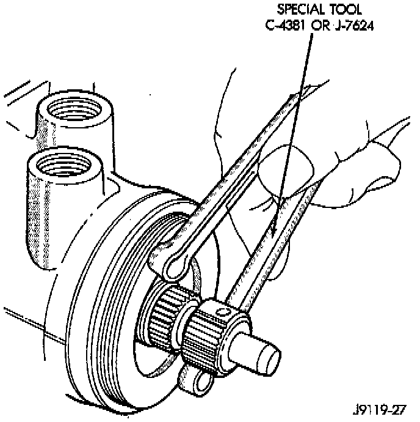
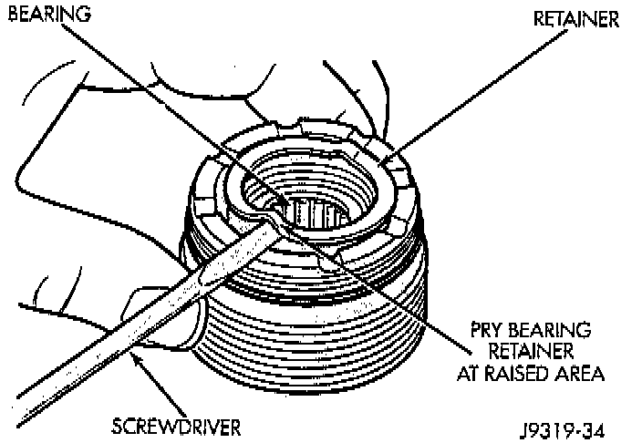
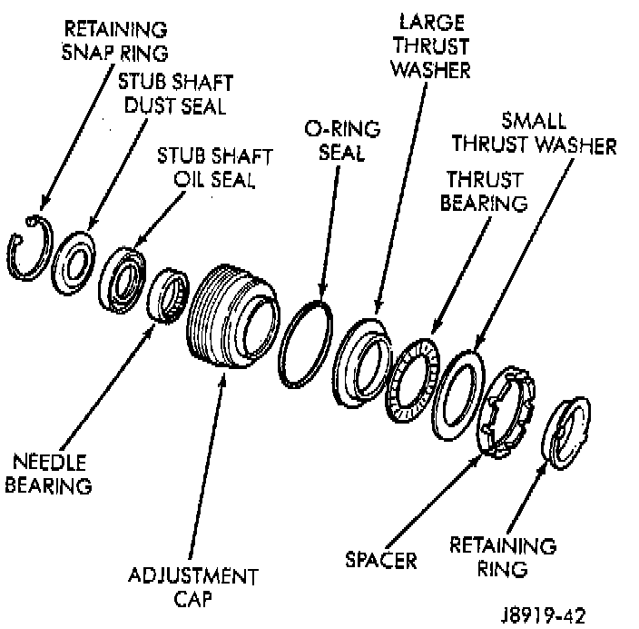
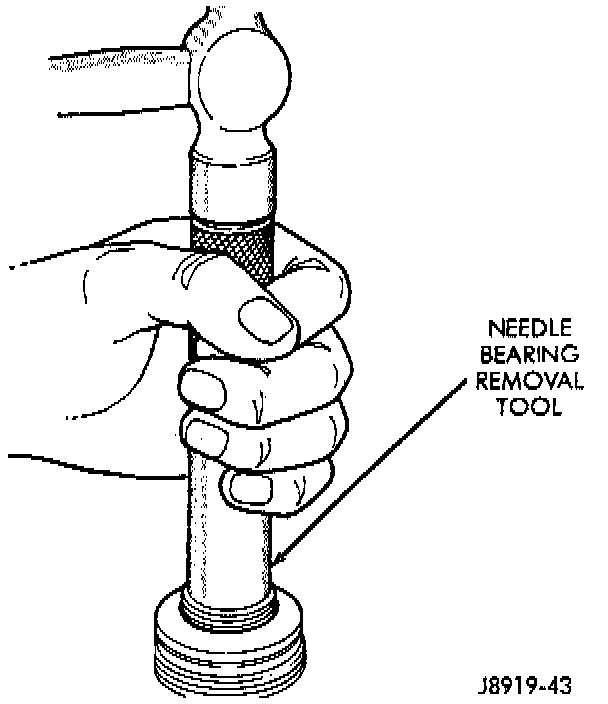
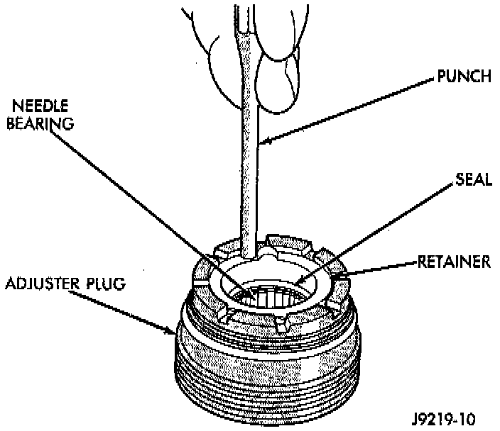
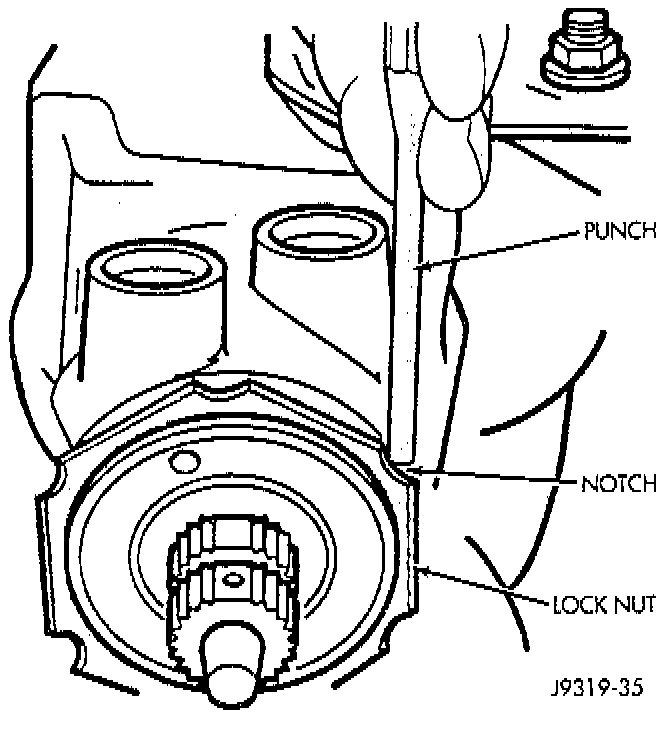

Adjuster Plug Assembly Replacement
NOTE: Steering gear must be removed from the vehicle for this procedure.REMOVAL
1. Remove adjuster plug lock nut from housing.

2. Remove adjuster plug from housing with Spanner Wrench C-4381, or equivalent.

3. Remove thrust washer bearing retainer from adjuster plug with screwdriver.

4. Remove bearing spacer, races and thrust bearing.
5. Remove O-ring seal and retaining snap ring.

6. Remove needle bearing, dust seal and oil seal with remover/installer C-4177 and handle C-4171, or equivalents.
CAUTION: Needle bearing must be installed with identification on bearing facing tool to prevent damage to bearing.
INSTALLATION
1. Install needle bearing into adjuster plug with remover/install C-4177 and handle C-4171, or equivalents.
2. Apply white petroleum grease on oil seal. Install oil seal into adjuster plug with remover/installer C-4177 and handle C-4171, or equivalents.
3. Apply white petroleum grease to dust seal cavity and install dust seal into adjuster plug with remover/installer C-4177 and handle C-4171, or equivalents.
4. Install retainer snap ring.
5. Install O-ring seal to adjuster plug.
6. Install large bearing race, thrust bearing, small bearing race and bearing spacer to adjuster plug.

7. Install thrust washer bearing retainer to adjuster plug.
CAUTION: When installing adjuster plug, care should be taken not to cut the seals.
8. Install adjuster plug into housing with Spanner Wrench C-4381, or equivalent.
9. Adjust bearing preload, refer to Thrust Bearing Preload Adjustment.

10. Install adjuster plug lock nut, and using a punch (drift) in a notch, tighten securely. Hold adjuster plug to maintain alignment of the marks.
11. Adjust pitman shaft, refer to Over-Center Adjustment.